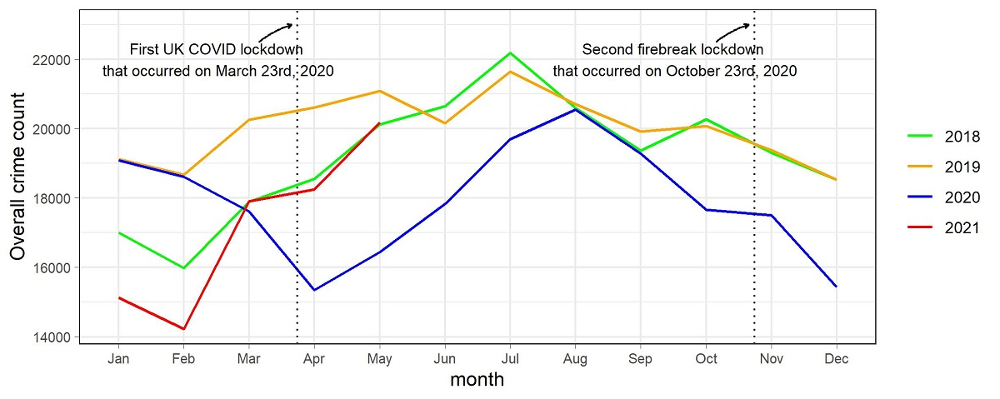

Impact on overall crime

Figure 1: Time series plot of crime in Wales
Figure 1 shows the overall crime count trend (excluding Drugs and Anti-Social Behaviour) from January 2020 to May 2021, with crime count trends from previous years as comparison. As illustrated in Figure 1, 2020 goes through a relatively huge crime dip in April compared to the crime trend on the same month previous years. This is due to the UK lockdown that went into effect on March 23rd, resulting in the first full month of lockdown occuring in April 2020. Then as the lockdown restrictions were relaxed from May 2020 to August 2020, crime started to go back up until it was reached a point in August 2020 that was similar to crime counts in August from previous years.
Throughtout the month of September 2020, lockdown restrictions were put in place for some local areas due to the resurgence in covid cases. This led to a second steady decline in crime for the whole of September. Crime continued to go down in October 2020, albeit not as drastically as the previous month. However, the second "firebreak" lockdown was put into effect from October 23rd to November 9th and a subsequent third lockdown on December 26th, which led to a decline in crime from November 2020 to February 2020, which was as steep as the crime dip that occured from March 2020 to April 2020.
Finally, lockdown restrictions started getting relaxed starting from early March 2021 till May 2021, resulting in crime climbing back to pre-pandemic crime levels from March 2021 to May 2021. This is the macro-level crime trend which will be broken down in the following sections in order to analyze the contributions of different crime types and local areas to this trend.
Impact on different types of crime

Figure 2: Time series plot of different types of crime in Wales
Figure 2 shows the crime count trend of different types of crime from January 2020 to May 2021, with crime count trends of different crime types from previous years as comparison. From the figure above, it can be observed that Violence/sexual offences, burglary, theft from the person, other theft and shoplifting were the crime types whose 2020 trends aligned the most with the overall crime trend in Figure 1, leading to the conclusion that overall crime in Wales consisted mainly of these crime types.
Figure 3: Time series plot of the Gini Coefficients of different types of crime in Wales
Figure 3 shows the gini coefficients (statistical measure of the degree of variation or inequality that goes from 0 to 1; the closer to 1 that the gini coefficient is, the more unevenly distributed that crime is across Wales) of the different crime types and for the same time period in Figure 2. From Figure 3, it can be observed that gini coefficients of Violence/sexual offences, Burglary, theft from the person, criminal damage/arson and shoplifting are as follows:
- Violence/sexual offences: ~0.375
- Burglary: ~0.5
- Theft from the person: ~0.5 to ~0.8
- Other theft: ~0.5
- Shoplifting: ~0.75
- Criminal damage/arson: ~0.5
The gini coeffients above suggest that different crime types have varying degrees of distribution across Wales, i.e. among the 6 crimes listed above, Violence/sexual offences was the most evenly distributed, Theft from the person and shoplifting were the least distributed, while burglary, criminal damage/arson and other theft were somewhere in the middle with some degree of unequal distribution across Wales. In the following section, crime per MSOA region will be further analyzed.
Breakdown of crime per MSOA cluster
Figure 4: K-longitudinal cluster plot of crime per MSOA cluster
Figure 4 is a k-longitudinal cluster plot containing 6 clusters of all MSOA regions in Wales. Each cluster consists of MSOA regions with a similar level of crime and illustrates the contribution of each MSOA cluster to the overall crime trend. The solid lines represent the mean crime count for each cluster at any given point in time from January 2020 to May 2021. The violin shapes represent the variation around the mean crime count for each month.
The cluster plot shows that the crime level was relatively low and stable for most MSOA regions, which happened to be in clusters A and B (59% of MSOA regions in Wales). Clusters C and D had levels that were relatively mid-level in terms of stability and crime counts (33.2% of MSOA regions in Wales). However, the stability and crime counts in clusters E and F were the highest by far, with only 7.82% of MSOA regions not only contributing the most number of crimes to the overall crime trend, but also aligning the most with the overall crime trend in terms of declines and increases from January 2020 to May 2021.
Figure 5: Wales map of 2020 crime counts in MSOA cluster A
Figure 6: Wales map of 2020 crime counts in MSOA cluster B
Figure 7: Wales map of 2020 crime counts in MSOA cluster C
Figure 8: Wales map of 2020 crime counts in MSOA cluster D
Figure 9: Wales map of 2020 crime counts in MSOA cluster E
Figure 10: Wales map of 2020 crime counts in MSOA cluster F
Figures 5 - 10 are 6 different maps of the Wales MSOA outline, each pinpointing the crime counts that belong to MSOA areas in each of the 6 clusters. It can be observed that clusters E and F contain the smallest number of MSOA regions, despite contributing the most to the overall crime trend. On the other hand, clusters A and B contain the largest number of MSOA regions, despite contributing the least to the overall crime trend. This is in line with the cluster plot in Figure 4. The next section further breaks down the contribution of each cluster by month from January 2020 to May 2021.
Figure 11: Bar plot of Monthly crime count change per MSOA cluster
Figure 11 is a bar plot that shows the monthly change of crime count and percentage of total positive or negative change for each cluster from January 2020 to May 2021.
As illustrated by the overall crime trend in Figure 1, crimes from all clusters experienced a relatively steep decline from March 2020 to April 2020. That being said, the MSOA regions from clusters E and F contributed the most to the crime drop, i.e. 43% of the total crime drop, despite comprising of only 7.82% of all MSOA regions in Wales. In contrast, clusters A and B contributed only 34% to the total crime drop, despite making up 59% of all MSOA regions in Wales. This is in line with the cluster analysis that shows that overall crime in Wales was largely driven by a small number of areas that belong to clusters E and F.
As crime started to climb back up from April 2020 to May 2020, the contributions of clusters A and B increased (59% from April 2020 to May 2020), albeit by an amount that is still relatively small considering that clusters A and B contain most of Wales. On the other hand, the contributions of clusters E and F from April 2020 to May 2020 reduced to 3% in total, which is as a result of increase in overall crime during this time period being less steep compared to the decline from March 2020 to April 2020.
From May 2020 to July 2020, clusters A and B contributions reduced a little (42% from May to June and 31% from June to July), while clusters E and F contributions increased a lot (24% from May to June and 35% from June to July), due to the increase in overall crime being more steep compared to the previous time period from May to June. A similar trend continued from July 2020 to May 2021, i.e. clusters E and F contributed a disproportionately large amount to the overall crime increase or decrease, compared to other clusters. A breakdown of overall crime into different crime types per cluster for every month in 2020 is in the following section.
Figure 12: Bar plot of monthly contributions of each crime type to overall crime
Figure 12 shows the monthly contributions of each crime type to overall crime. From the figure above, it can be observed that the crime types in clusters A to D (areas with low to mid crime levels) have relatively stable proportions from January 2020 to December 2020, with Violence/sexual offences contributing the most to overall monthly crime, followed by Public order, criminal damage/arson, burglary and finally other theft.
However, the crime types in clusters E and F (areas with high crime levels) have relatively unstable proportions, with the proportions of Violence/sexual offences in clusters E and F being less than those in other clusters. On the other hand, the proportions of shoplifting, public order, theft from the person, bicycle theft, other theft, and criminal damage/arson increased in that order, compared to those in the low to mid crime clusters, with bicycle theft contributing a larger proportion to cluster F. This suggests that a large change in crime opportunities occurred in a handful of local areas located in clusters E and F. The section below explores the relationship between crime and structres that serve as crime opportunity areas.
Correlation between crime and structures
Figure 13: Spearman's rank correlation plot between mean overall crime count and the number of structures in each MSOA cluster, where x = number of clusters with 1 as cluster A, 2 as cluster B, 3 as cluster C, 4 as cluster D, 5 as cluster E and 6 as cluster F, and y = the mean crime count per cluster
Figure 13 is a spearman rank correlation plot that illustrates the correlation between the mean overall crime count and the number of structures in each MSOA cluster. A spearman rank correlation is a non-parametric test that is used to calculate the level of association between two variables. The spearman rank correlation coefficient is between -1 and 1. A coefficient of -1 or values close to -1 indicates that a strong negative correlation between x and y ( as x increasess, y decreases). Conversely, a coefficient of 1 or values close to 1 indicates that a strong positive correlation between x and y (as x increases, y increases).
Figure 13 shows that the spearman rank correlation coefficient is 0.943, meaning that the mean crime count of a region is strongly related to the number of structures in the area (i.e. nightclubs, convenience stores, pubs, car park, bicycle parks, malls and other crime opportunity structures). The plot also shows that cluster E and F had the highest mean crime count out of all the clusters, which explains why the MSOA regions in these clusters contributed more to crime than the regions in other clusters.
Based on all the analysis done, it can be concluded that the covid lockdowns resulted in a small handful of regions driving most of overall crime trend in Wales due to the fact that there is a much higher number of crime opportunity structures in these local areas than in any other part of Wales.